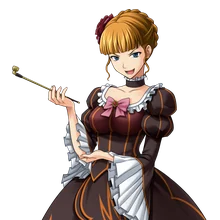
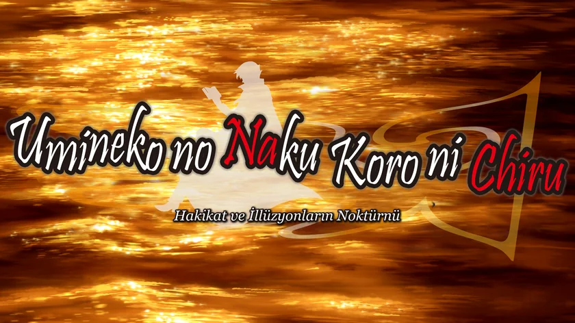

I · MANTIK VE KAPALI ODA
Kırmızı, Mavi, Altın ve Mor Gerçekler

“Dinle ve hatırla! Kırmızıyla söylediğim her şey mutlak gerçektir! Kanıta ya da tartışmaya asla ihtiyaç duymaz!”
QUESTION & ANSWER ARCS · 1-8. BÖLÜMLER
Rokkenjima'daki sekiz oyun tahtasını PS3 seslendirmesi ve 1080p grafiklerle Türkçeye taşıyan yama.
“Aşk olmadan gerçeği göremezsin.” Umineko'nun 1. ve 2. Bölüm mangalarıyla Higurashi serisini çeviren Remilya'dan, görsel romanın Question ve Answer Arcs bölümleri.
Aşağı kaydır veya ↓ tuşuna bas
I · MANTIK VE KAPALI ODA

“Dinle ve hatırla! Kırmızıyla söylediğim her şey mutlak gerçektir! Kanıta ya da tartışmaya asla ihtiyaç duymaz!”
II · QUESTION & ANSWER ARCS

III · GÖRSEL UYARLAMA VE TİPOGRAFİ
1. Bölüm · İsim açıklamaları ve kelime oyunlarındaki Japonca Kanji karakterleri (右代宮 戦人) Türkçe satır içinde bozulmadan görünür.
Tam ekran görmek için görsele tıklaIV · MANGA UYARLAMALARI
ROKKENJIMA · 4 EKİM 1986
Legend of the Golden Witch · 黄金の魔女の伝説
Ushiromiya ailesi yıllık konferans için Rokkenjima'da toplanır. Tayfun adayı dış dünyadan koparınca Altın Cadı Beatrice'in mektubu okunur ve ilk kapalı oda cinayetleri işlenir.
SÜRÜM v1.0.0 · 07TH-MOD UYUMLU
Yamayı kurmadan önce Steam veya GOG sürümünün üzerine 07th-Mod (PS3 seslendirme ve 1080p grafik paketi) kurulu olmalı.
Steam ve GOG klasörlerini otomatik bulur, 07th-Mod kurulumunu doğrular ve dosyaları yedekleyerek yamayı kurar.
Çeviride LLM (Argon 4, Carbon 4 ve Gemini) kullanılmıştır. Bununla probleminiz varsa lütfen yamayı kullanmayınız.
Manuel ZIP Paketleri (İsteğe Bağlı · LINUX & STEAM DECK)
07th-Mod Kurulum Aracında şu seçenekleri işaretle:
| AYAR | QUESTION (1-4) | CHIRU (5-8) |
|---|---|---|
| Choose Patch | full Patch | adv-mode (Zorunlu!) |
| Translations | English / Japanese | English / Japanese |
| Experimental Script | No Change | No Change |
| Sprites / BGM | PS3 Sprites (Önerilir) | PS3 Sprites (Önerilir) |
3 · Umineko_TR_Kurulum.exe aracını açıp 'Yamayı Kur' düğmesine bas. İstediğin zaman 'Yedeğe Dön' ile İngilizce 07th-Mod dosyalarına geri dönebilirsin.
REMILYA.DEV · BAĞIMSIZ ÇEVİRİ
Kâr amacı gütmeyen hayran çevirisi, orijinal oyun dosyalarını içermez. Çeviride LLM (Argon 4, Carbon 4 ve Gemini) kullanılmıştır. Bununla probleminiz varsa lütfen yamayı kullanmayınız.
REMILYA.DEV KISA BAĞLANTILAR